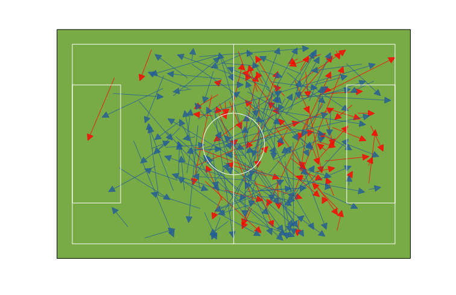

Mourinho is right about Fàbregas
Mourinho's statement that "Barcelona misused Cesc Fábregas" has stired some controversy, as expected. One common critique was that Fàbregas is known for having a great start of the season, but loses steam as the season progresses.
But is Mourinho right about Fàbregas capacity to "control the game and dictate the intensity of it" due to the way he is being used at Chelsea?
I figured using only the first two matches of each season would be a fair comparision. These are all the passes made by Fàbregas in the first two league matches of this and the past season.

Passes made for Chelsea, in blue, are mostly made around the midfield, while Barcelona's passes are made up front. This is clear if we look at stats after dividing the pitch in 5 equal parts:
| Passes | Key Passes | Long Passses | ||
|---|---|---|---|---|
| Team Name | Fifth | |||
| Barcelona | 1 | 1 | 0 | 0 |
| 2 | 3 | 1 | 1 | |
| 3 | 30 | 0 | 3 | |
| 4 | 40 | 1 | 2 | |
| 5 | 12 | 4 | 0 | |
| Chelsea | 1 | 4 | 0 | 1 |
| 2 | 37 | 0 | 5 | |
| 3 | 69 | 1 | 15 | |
| 4 | 49 | 2 | 1 | |
| 5 | 7 | 2 | 0 |
Notice the amount of long passes Fàbregas has been able to make for Chelsea, both due to his lower positioning and the difference in playing styles.
He is also much more involved in the match. He made almost double the amount of passes, and had a better success rate. We can also confirm his lower positioning: his vertical coordinate of his passes is considerably lower:
| Passes | Vertical Coordinate | Success (%) | Key Passes | Long Passes | ||
|---|---|---|---|---|---|---|
| sum | mean | stdev | mean | sum | sum | |
| Team Name | ||||||
| Barcelona | 86 | 67.5 | 16.0 | 0.826 | 6 | 6 |
| Chelsea | 166 | 55.2 | 17.0 | 0.904 | 5 | 22 |
The code used to get this values is shared here. Unfortunately, the data is owned by Opta so it can't be shared.
Comments
Comments powered by Disqus